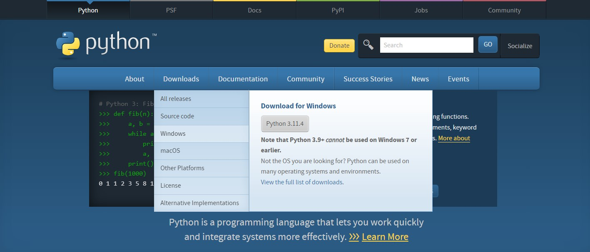
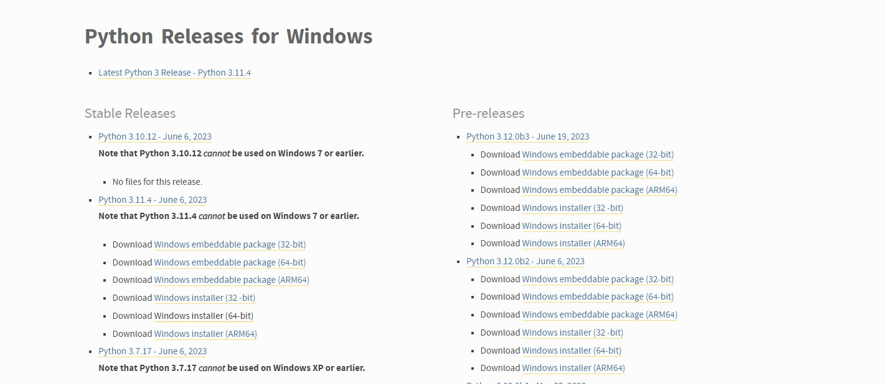
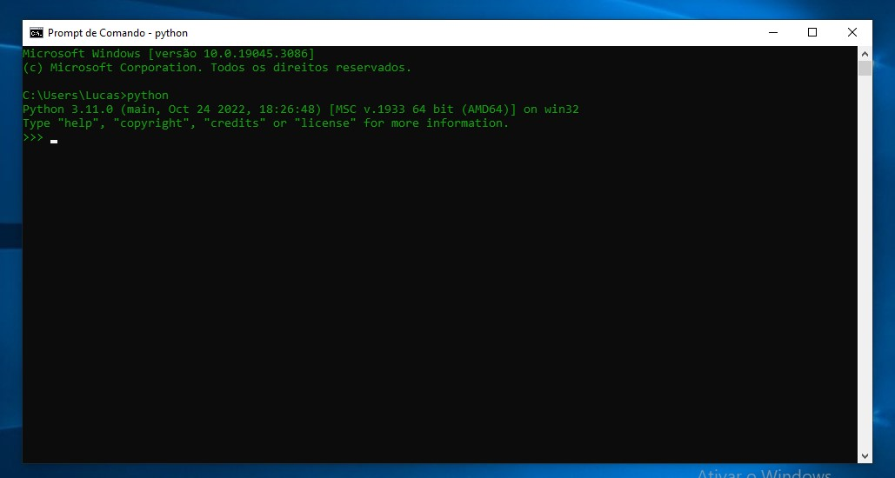
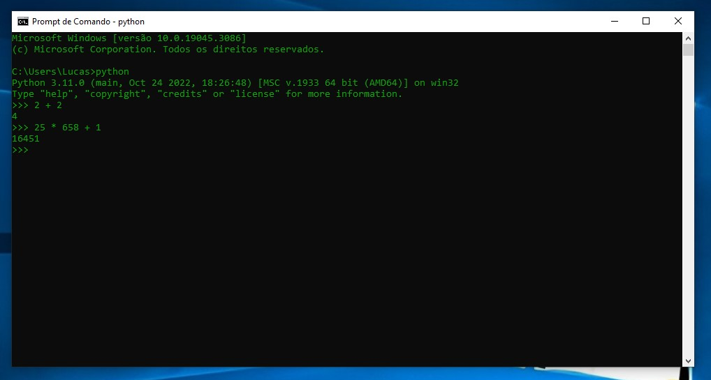
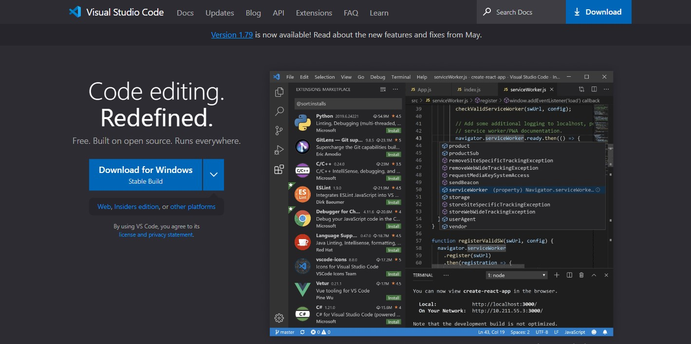
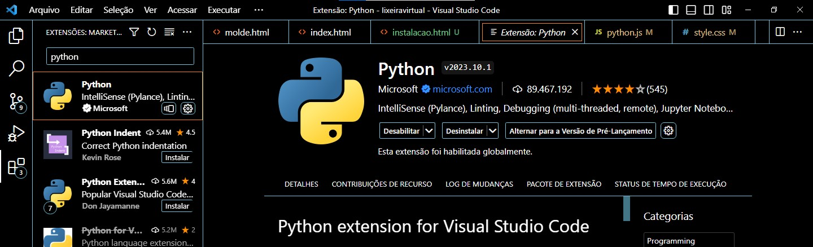

Instalação do Python
Antes de qualquer coisa, é preciso instalar o Python em sua máquina.
Para isso, acesse o site python.org.
Vá na aba Downloads e escolha o seu sistema operacional.

Depois escolha o pacote desejado para instalação.
No meu caso, Windows Installer (64-bits).

Depois, execute o arquivo de instalação e concorde com tudo.
Após isso, para conferir se deu certo, abra o prommpt de comando e digite "python".

Se deu certo, você poderá utilizar o Python para resolver contas e fórmulas matemáticas.

Se tudo estiver certo, podemos passar ao próximo passo.
Para escrevermos os códigos em Python, iremos utilizar o Visual Studio Code.
Para instala-lo, acesse o site code.visualstudio.com.

Ao terminar o Download, concorde com todas as opções requeridas.
Já com o Code aberto, na aba Extensões, procure pela extensão Python e instale-a.

Agora, com tudo preparado, abra um diretório, crie seu arquivo .py, e vamos codar.